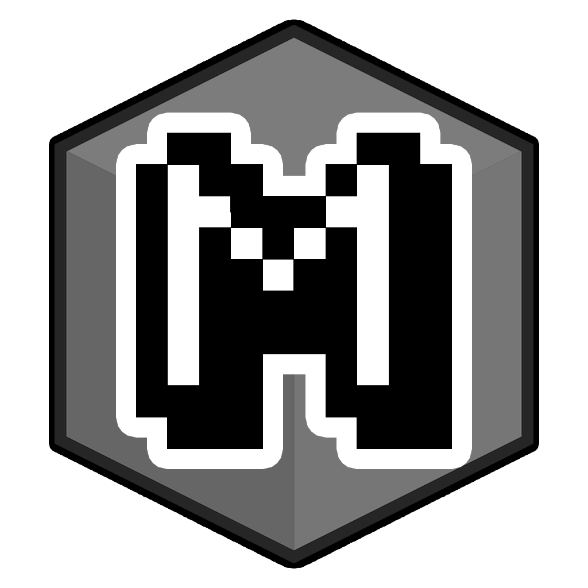

stream.html
Browser overlays for your stream. Choose a tool, make it yours, and copy the URL into OBS.
Simple is complicated enough.

Browser overlays for your stream. Choose a tool, make it yours, and copy the URL into OBS.
Simple is complicated enough.